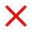
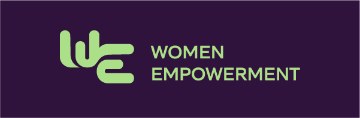
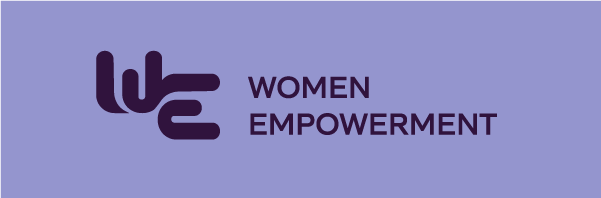
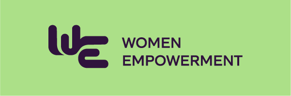
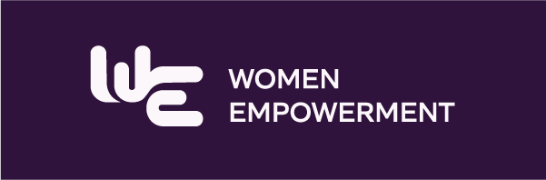
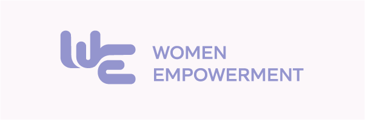
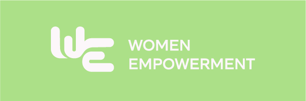
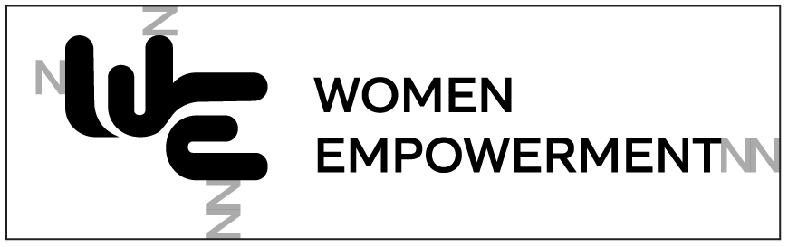
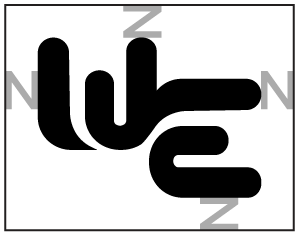
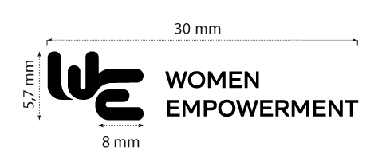

Stiftelsen WE
Utvikling av en helhetlig visuell identitet for Women Empowerment — en nyetablert sosial stiftelse som bygger broer mellom næringsliv og sosialt entreprenørskap.
00
Oppdragsgiver
Stiftelsen WE (Women Empowerment) er en nyetablert sosial stiftelse grunnlagt av Ragnhild Slettner og Kirstine Holst. Stiftelsen arbeider for å skape nye veier inn i arbeidslivet for kvinner uten utdanning, arbeidserfaring eller nettverk — gjennom strukturert samarbeid med næringslivet.
Som brobygger mellom næringsliv og sosialt entreprenørskap er WE en ny type aktør: en stiftelse som matcher virksomheter med sosiale entreprenører og følger opp resultatene over tid.
Oppdraget ble gitt uten en fastsatt visuell retning — til og med logonavnet var udefinert ved oppstart. Det ga designerne reelt strategisk handlingsrom, men krevde egne valg og tett dialog underveis.
Vi tror på muligheter som varer, ikke bare hjelp som forsvinner.
Ragnhild Slettner · Gründer, Stiftelsen WE
01
Prosess
02
Bildebruk
03
Logo







Krav til luft og mål


For å sikre tydelighet og lesbarhet skal logoen alltid ha tilstrekkelig friluft rundt seg. Friluftsonen defineres av høyden på et utvalgt element i logoen og må minimum opprettholdes på alle sider. Ingen tekst, grafiske elementer eller bilder skal plasseres innenfor dette området.
Minimumsstørrelsen er satt for å sikre at detaljer og typografi forblir tydelige både i trykk og på digitale flater. Logoen skal ikke brukes mindre enn angitte mål, slik at formspråk og lesbarhet ikke forringes.

04
Fargepalett
05
Typografi
DM Serif Display · Overskrifter
DM Serif Display brukes til overskrifter og fremhevede sitat. Italic som kontrastelementfor lekent og personlig uttrykk.
DM Sans · Brødtekst / UI
Ren og moderne grotesk for brødtekst og UI. Sikrer hierarki og lesbarhet på tvers av alle flater.
06
SWOT-analyse
Styrker
- Tydelig visjon om å styrke kvinners selvstendighet
- Styret består av erfarne sosiale entreprenører
- Opererer utenfor offentlige strukturer — rask og selvstendig
- Internasjonalt nedslagsfelt gir bredere påvirkning
Svakheter
- Begrenset synlighet som nyetablert organisasjon
- Mangler stabil finansieringsstruktur
- Må vise til konkrete resultater for å tiltrekke donorer
Muligheter
- Økende interesse for sosial bærekraft i næringslivet
- Sosiale medier som effektiv plattform for synlighet
- Partnerskap med andre stiftelser og aktører
Trusler
- Høy konkurranse om støtte fra samme givermiljø
- Usikker global økonomi påvirker givernes kapasitet
- Skepsis til nye aktører fremfor etablerte organisasjoner